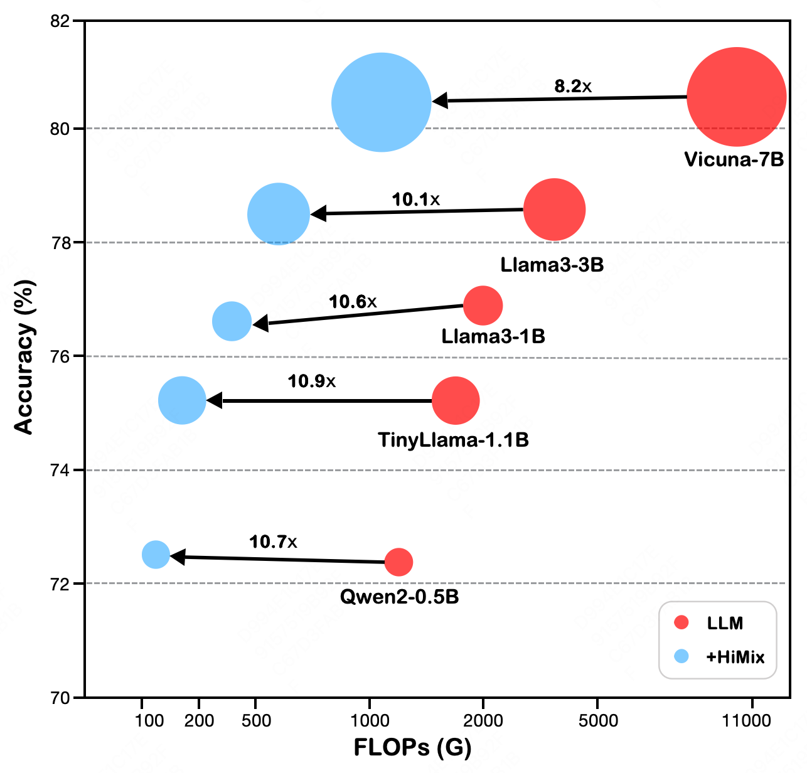
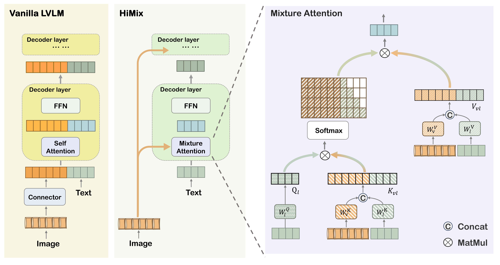
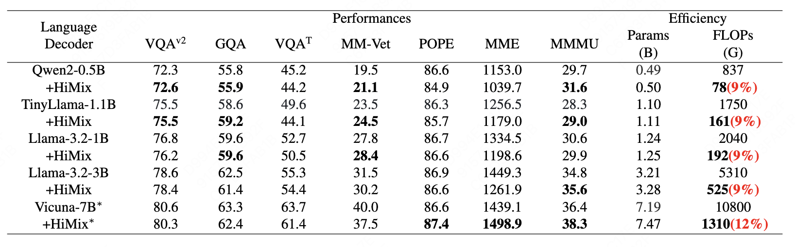
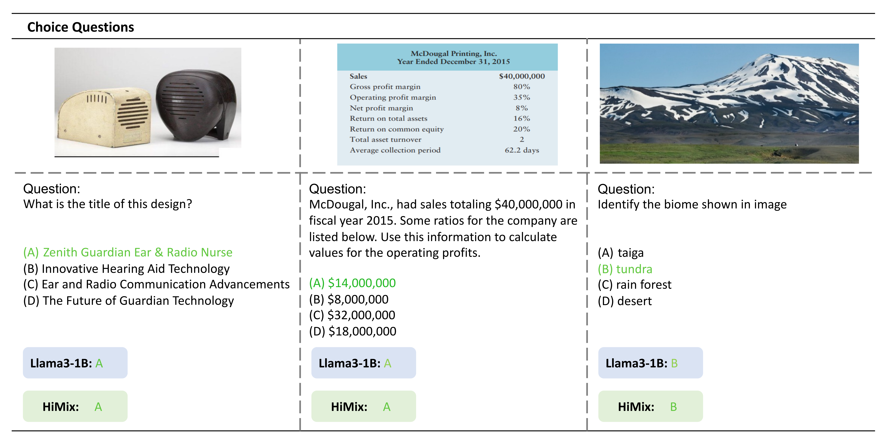

HiMix: Reducing Computational Complexity in Large Vision-Language Models
|
Xuange Zhang1†
|
Dengjie Li2†
|
Bo Liu1
|
Zenghao Bao2
|
Yao Zhou2
|
|
Baisong Yang2
|
Zhongying Liu2
|
Yujie Zhong2
|
Zheng Zhao2*
|
Tongtong Yuan1*
|
|
1Beijing University of Technology, CN 2Meituan Inc., CN
|

Comparison of performance and computational cost of the language decoder between the original and HiMix models. The circles, arranged from smallest to largest, represent the models Qwen2-0.5B, Llama3-1B, TinyLlama-1.1B, and Llama3-3B. While maintaining a similar performance to the original models, our HiMix achieves a 10× reduction in computational cost.
Abstract
Benefiting from recent advancements in large language models and modality alignment techniques, existing Large Vision-Language Models~(LVLMs) have achieved prominent performance across a wide range of scenarios. However, the excessive computational complexity limits the widespread use of these models in practical applications. We argue that one main bottleneck in computational complexity is caused by the involvement of redundant vision sequences in model computation. This is inspired by a reassessment of the efficiency of vision and language information transmission in the language decoder of LVLMs. Then, we propose a novel hierarchical vision-language interaction mechanism called Hierarchical Vision injection for Mixture Attention (HiMix). In HiMix, only the language sequence undergoes full forward propagation, while the vision sequence interacts with the language at specific stages within each language decoder layer. It is striking that our approach significantly reduces computational complexity with minimal performance loss. Specifically, HiMix achieves a 10× reduction in the computational cost of the language decoder across multiple LVLM models while maintaining comparable performance. This highlights the advantages of our method, and we hope our research brings new perspectives to the field of vision-language understanding.
Framework

Comparison of Vanilla Model and HiMix Architectures. Left: Overall structure of traditional Vanilla. Middle: Overall structure of HiMix. Right: Details of Mixture Attention. Hierarchical Vision Injection for Mixture Attention (HiMix) is a method designed to reduce computational overhead while maintaining LVLM performance. After fusing the vision and language features through Mixture Attention, the vision sequence no longer participates in the forward propagation process within the language decoder, thereby substantially decreasing the overall computational load.
Results

Comprehensive Comparison of Performance and Computational Efficiency Between the Original Model and HiMix. The models are trained using the LLAVA 1.5 dataset, with SigLIP serving as the vision encoder. Performance metrics include VQAv2, GQA, TextVQA, MM-Vet, POPE, MME, and MMMU. Computational efficiency is assessed by Language Decoder parameter count (B) and GFLOPs. Performance improvements are highlighted in bold, with computational cost shown in red as a percentage of the original model. * represents training with the llava-ov dataset
Visualisation


Citation
If you find our work useful in your research or applications, please cite our paper: